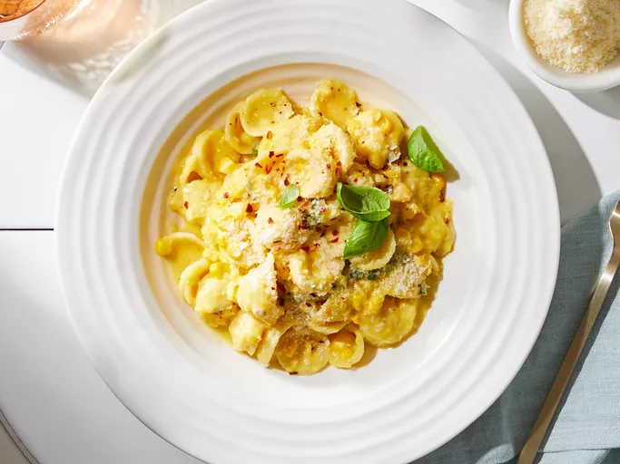

Corn Pasta

Description
Ingredients
- 12 ounces dry shell or orecchiette pasta
- 4 tablespoons salted butter, divided
- 2 large cloves garlic, minced
- 1/4 teaspoon salt
- 1/4 teaspoon freshly ground black pepper
- 2 cups fresh, frozen, or canned corn kernels, divided
- 1/2 cup freshly grated Parmesan cheese, plus more for serving
- 1/4 teaspoon crushed red pepper (optional)
- 1/3 cup torn fresh basil or mint, plus more for garnish
- 1 tablespoon lemon juice
Steps
- Gather all ingredients.
- Fill a large pot with lightly salted water and bring to a rolling boil. Stir in shell pasta and return to a boil. Cook pasta uncovered, stirring occasionally, 1 minute less than package instructions, about 8 minutes. Drain and reserve 1 1/2 cups pasta cooking water.
- Melt 1 tablespoon butter in an extra-large skillet over medium heat. Add garlic, salt, and black pepper. Cook until fragrant, stirring regularly, about 1 minute.
- Add 1/2 cup of the reserved pasta water and 1 3/4 cup corn. Bring to a boil, reduce heat, and simmer, covered, until corn is heated through and very tender, 2 minutes for canned corn, 3 minutes for frozen corn, and 6 minutes for fresh corn. Cool for 15 minutes.
- Add cooled corn mixture to a blender and blend until very smooth, about 2 minutes. Add additional pasta water as needed to blend.
- Melt the remaining 3 tablespoons butter in the extra-large skillet. Add the remaining 1/4 cup corn and cook over medium heat until tender and corn is heated through, about 1 minute.
- Add corn puree and cook, uncovered, over medium heat until heated through, about 2 minutes.
- Add cooked pasta and 1/2 cup of the reserved pasta water. Stir in Parmesan cheese and crushed red pepper, if using. Cook for 2 minutes, stirring constantly, adding more pasta water as needed to reach desired consistency.
- Stir in basil and lemon juice.
- Serve with more basil and Parmesan cheese.